Menu and Module Options¶
In the analysis area of the menu bar (top bar, left margin), we can find different sections corresponding to the Apps we have integrated into the RedBorder platform.
Later on, we will explore the different options for data visualization, types of charts, granularity (maximum degree of temporal detail for an event query), and attributes that can be combined to obtain a fully customizable network traffic visualizer.
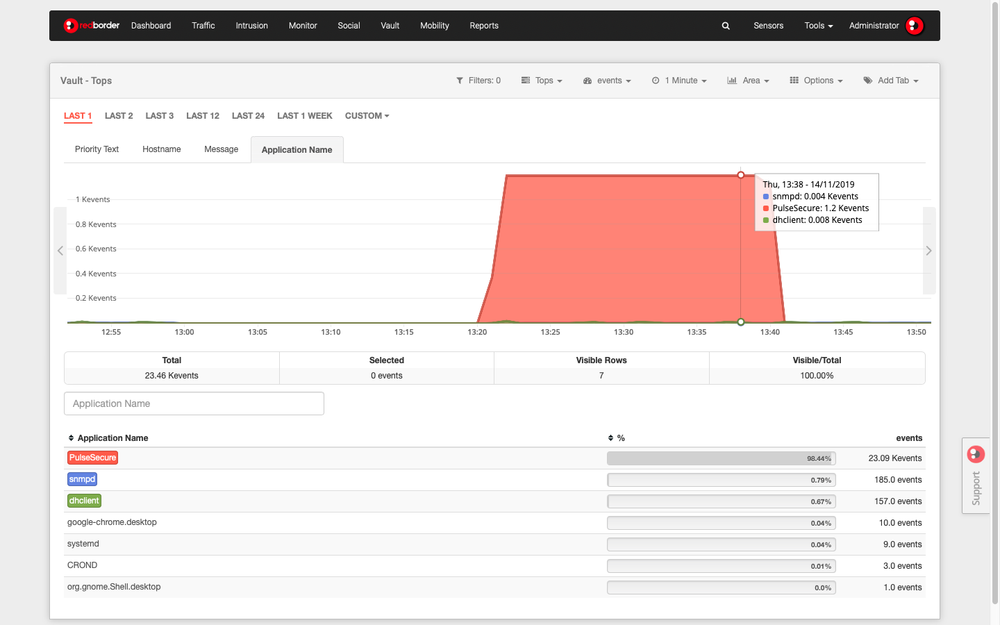
Module Overview
Options available in the submenu¶
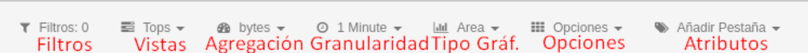
Submenu Options
Filters¶
Allow users to isolate a portion of the information for detailed inspection. In this tab, you can see the number of filters that have been applied to take actions on them:
- Advanced search.
- Create an alarm.
- Create a widget.
For more information about event filters, you can refer to the article Event Filtering
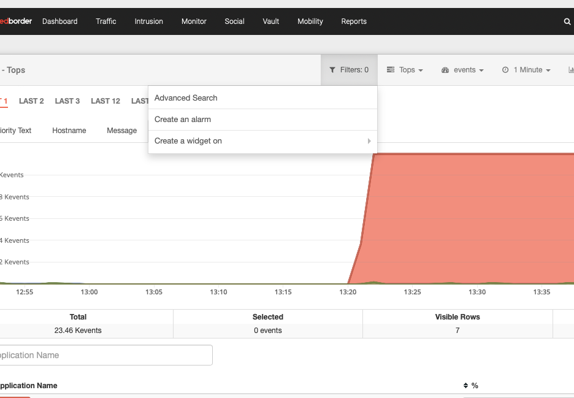
Filters
Views¶
Offers different options for displaying information. For more information, you can refer to the article Views, multiple options for visualizing data
- Raw: Raw events.
- Tops: Shows the total sum of data from different events to display them as one.
- Compare: Comparison of events within a time period.
- Unique: Display the number of unique events, grouped as indicated.
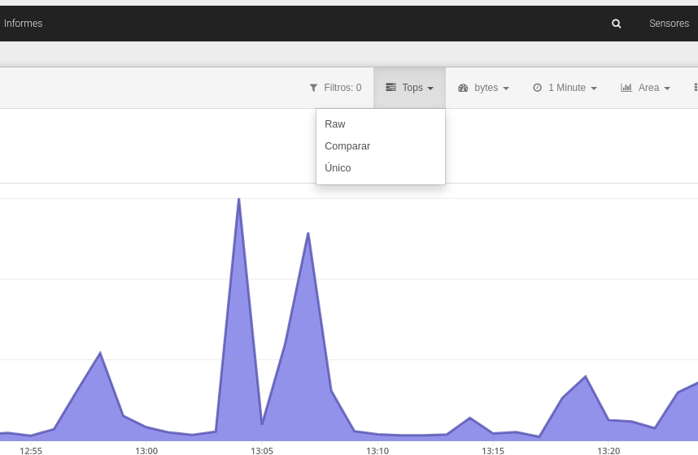
Views
Aggregation¶
There are different values or units of measure in which the data can be displayed. For example, flows per second (flows/s) or bytes per second (bps). Note that each module has its own aggregation options.
If you want to see the available aggregations, expand this tab:
Available Aggregations
| Aggregation | Description |
|---|---|
| bps | Number of bits per second |
| bytes | Total number of bytes transferred |
| packets | Total number of packets sent across the network |
| packets/s | Total number of packets per second sent across the network |
| flows | Number of exported flows |
| flows/s | Number of exported flows per second |
| client | Number of unique MAC addresses detected by the network probe |
| quality | Percentage of network signal strength as reported by the wireless controller and based on RSSI and number of clients |
| risk | Percentage representing how malicious your traffic is based on reputation systems |
| wireless stations | Number of wireless stations reported by the wireless controller |
| clients/station | Number of clients each wireless station has |
| bps/client | Average network usage per client |
| bytes/client | Average bytes sent per client |
| flows/client | Number of flows exported by the network divided by the number of clients |
| fps/client | Number of flows per second exported by the network probe divided by the number of clients |
| bytes/station | Average bytes sent per wireless station |
| bps/station | Average network usage per wireless station |
Recommendation...
Optimize your metric by combining different types of aggregation granularity options (time periods) that are available.
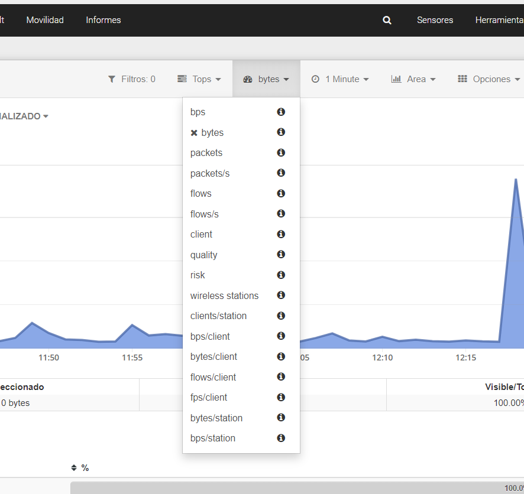
Aggregation
Granularity¶
Indicates the degree of temporal detail that can be shown in the information. The minimum value for granularity is one minute.
Granularity options vary depending on the time range displayed (1h, 2h, Last week, Last month, etc.). With this view, the user can analyze network traffic in real-time.
Depending on the selected time period, the user can understand traffic details, for example, over a two-minute interval.
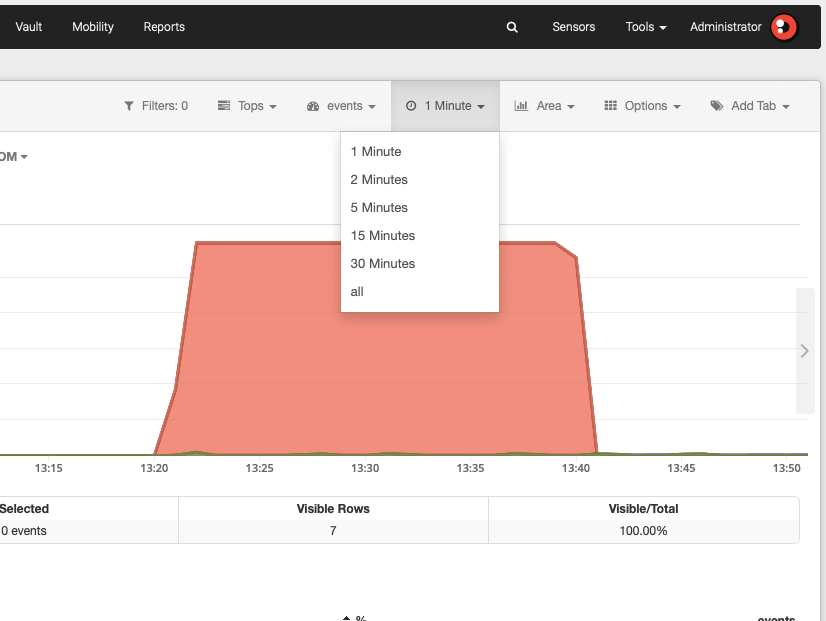
Granularity
Chart¶
Displays the different types of graphs among which the data can be shown. The available graph types vary depending on the selected view. This option does not appear, for example, when applying the map view of the data, as the data is represented on that map.
These are the graphical possibilities of the Redborder platform for views:
Area: graph that overlays the data on a group of elements belonging to the selected attribute, making the total traffic the sum of the traffic per attribute.
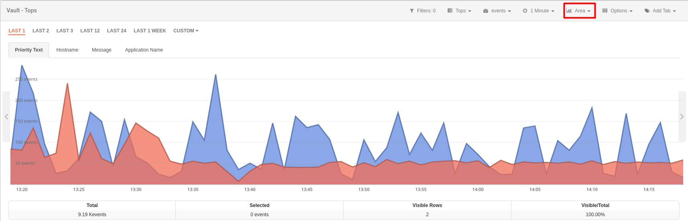
Chart Type: Area
To display a single graphical element, simply click on its drawn graph to isolate it.
Lines: graph that overlays the data on a group of elements belonging to the selected attribute; in this case, the area is not shown but the graph is represented by a line.

Chart Type: Lines
Bars: overlays data on a group of elements belonging to the selected attribute, with the total being the sum of values for each of those elements. In this case, the data is represented by bars.

Chart Type: Bars
Stacked Bars: provides in the same graph the data obtained for each of the elements included in the selected attribute, so you can see the results of independent IP, sensor, etc., represented in bars.

Chart Type: Stacked Bars
Accumulated: comparatively shows the data for each of the selected attributes in the same graph.
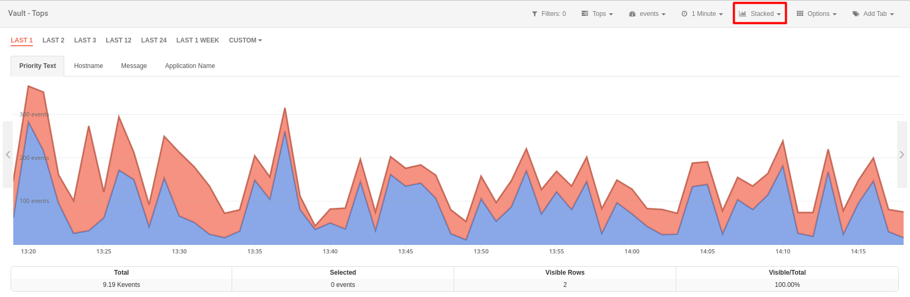
Chart Type: Accumulated
Flows: graph only available in Raw view. Shows traffic flow by sensor.
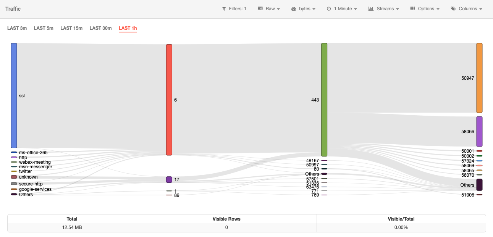
Graph Type: Flows
Options¶
In this section, the user can perform various actions to manage the data being displayed. The options vary depending on the selected view.
- Show total/Hide total: when selecting this option, the value of all differentiated traffic received or transmitted by each of the attributes that can be queried is displayed on the graph. When this option is active, the list of "Hide total" options appears. Available in the upper and unique view.
- Export to CSV: provides the option to export to CSV including the data corresponding to the selected attribute, you can set a row limit to include in the file. Only available for Tops and Unique views.
- Time machine: returns the machine to a previous state. By selecting this option, the user can see the data as if they were viewing it on the last specified day and time. Available for all views except Raw.
- Sort aggregations: allows changing the order of the aggregations displayed in the module.
- Sort columns: available for Raw view. Allows changing the order of the columns displayed in the module.
- Save tabs/columns as default: by selecting this option, the currently open tabs will be saved as the default tabs.
- Start Reloading: available for Raw view. Activates the countdown for data reload; on the left of the section bar, a countdown appears indicating the time to reload. At any time, this can be stopped by selecting Stop Reloading.
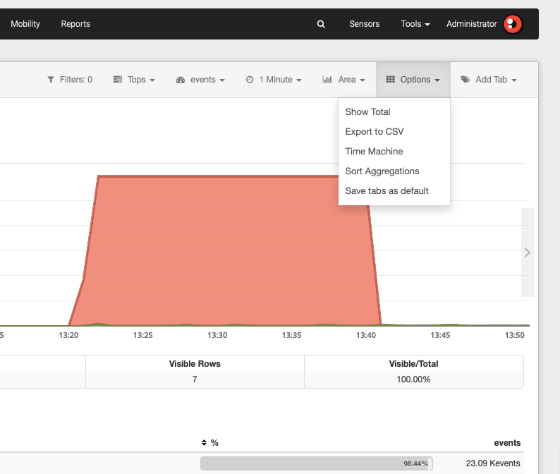
Options
Attributes¶
Events received by the Manager consist of a "column: value" pair. The values given in each column can be understood as specific event data that actually provide information. These are called "attributes".
These attributes help us carry out a comprehensive and customized analysis for each of the elements involved in the flow of network traffic in our organization. These are organized into tabs or columns in the view we are consulting. The options shown are common for all views, except for the Compare case (offers only comparability by weeks or months) and Maps, in which case this section is not shown.
If you want to see the available attribute categories, expand this tab:
Available Attribute Categories
- Application
- Client Data
- Blacklist
- Data Link
- Flow
- Interface
- Location
- Network
- Transport
- UUIDs
- File
- Malware
- Network
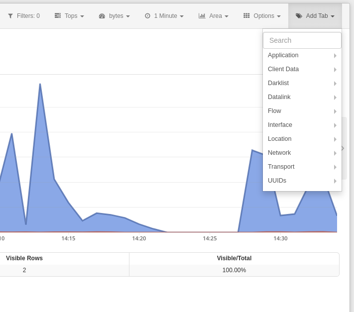
Attributes
All attributes have specific meaning and functionality. For example, in the Traffic module, we can observe highly relevant attributes such as Public IP, which shows the real IP address of devices on the network, Public IP MAP, indicating their position on the map, or Country Code, which indicates the country they belong to.

Attributes: Overview
Body of the screen¶
Time Filtering¶
Located to the left, a bit below the submenu, are shortcuts to filtered events based on time periods. The periods defined in the platform are Last Hour, 2 hours, 3 hours, 12 hours, 24 hours, and Last Week.
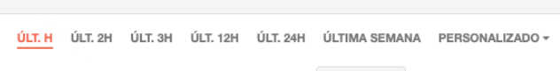
Time Period Filters
There is the possibility to select a different time period than the default one offered. Depending on the user's needs, a custom selection of the period can be made using the Custom option. The procedure to perform a custom time filter is specified later.
Attribute Tabs¶
Classified information of network traffic by attributes. By browsing through each of the tabs, detailed values associated with the selected attributes can be explored.
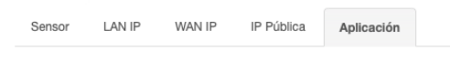
Attribute Tabs
Keep in mind...
The user can change the order in which the tabs are displayed at any time. To do this, simply drag and drop the tab to the desired position.
This part of the body is not shown in the Raw view.
View¶
In this area, the data is displayed according to the selected view and chart type. Placing the mouse over any of the points that make up the chart, a dialog box displays detailed information for that moment in time, aggregation, and attribute.
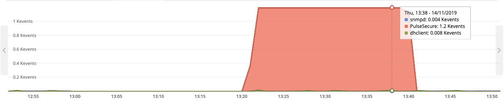
View
Summary¶
Below the View area, there is a summary of all the data displayed, both in the view and in the table. In the following order, this summary indicates the total aggregation value of all loaded data, the total aggregation value of all loaded and selected data, the number of rows of loaded data, and the percentage of aggregated value of the loaded data from the total data.
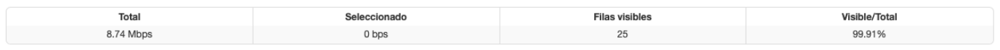
Summary
Search Engine¶
Allows searching by attribute. Searches are automatically converted into filters, as we'll see later.
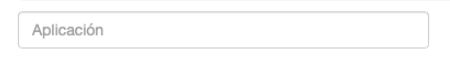
Search Engine
Data Table¶
Displays values classified by the selected attribute type. For example, each row could show each of the source IPs (Column/Attribute: SRC Address) with the percentage of detailed bytes (aggregation) that element consumes within the network.
For the isolated analysis of one or more elements from this bar (selecting as a filter), click on the element you want to filter and then press the corresponding button that will appear next to the search engine.
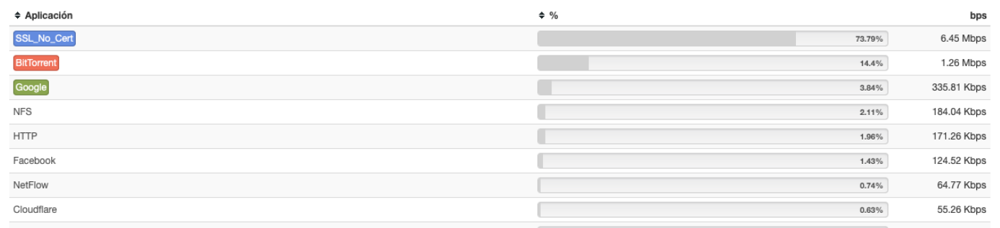
Data Table
Keep in mind...
Hovering over any of the elements in the data table will display a menu with different actions that can be performed on that element. Depending on the type of attribute, sorting options will be displayed in the contextual menu.